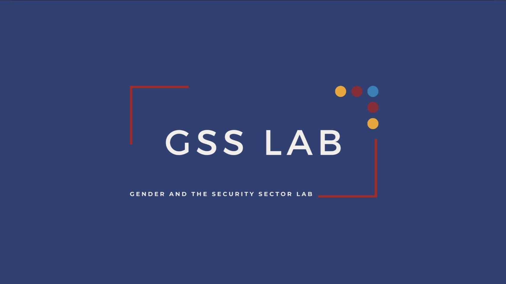
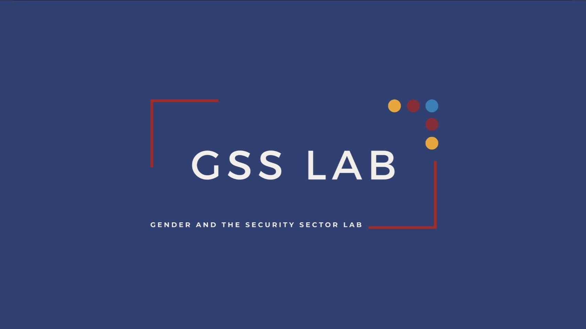

Experiences
Legal Research Assistant Legal Information Institute, Cornell Law School – Ithaca, NY
Reviewed 120+ legal encyclopedia entries for accuracy. Enhanced editorial standards and legal scholarship accessibility.
Student Research Fellow Hoover Institution, Stanford University – Stanford, CA
Collected and analyzed 100+ sources to support institutional research on governance transitions and policy outcomes.
Intern Ford Foundation – New York, NY
Led a cross-team IT optimization project and facilitated global events like the World Wide Meeting. Managed Salesforce CRM data.
Intern Rational 360 – Washington, DC
Led strategic PR campaigns, performed cyber threat research, and analyzed media using Muck Rack & LeadershipConnect.
Intern Center for International Policy – Washington, DC (Remote)
Published 10+ reports and analyzed 50+ congressional bills on tech/security policy. Engaged 10K+ followers via 170+ posts.
Research Assistant Gender & Security Sector Lab - Ithaca, NY
Analyzed time-series data on violence against women using LexisNexis, ProQuest, and Factiva across 3 languages.
Education
Cornell University – Ithaca, NY Bachelor of Arts (B.A.) in Government
Minors: Public Policy, Law & Society, American Studies
Data Science Track · Dean’s List
Expected Graduation: May 2026
Extracurriculars Clubs & Activities
• Vice President, International Students Association
• President, Organization for Afghan Students
• Member, Sigma Alpha Mu
• Member, Alexander Hamilton Society
• Member, International Student Advisory Board
• Mentor, Prepare Program
• Participant, Cornell in Washington Program
• Contributor, Cornell Undergraduate Research Journal
Student Staff: Resident Advisor, Peer Career Coach, Service Center Supervisor